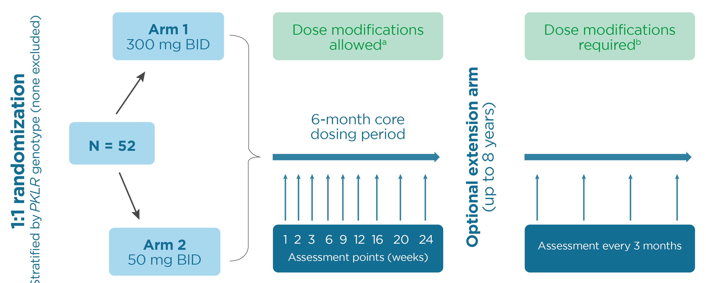

DRIVE-PK
STATUS: CORE STUDY COMPLETED
First-in-patients, open-label phase 2 study evaluating the safety and efficacy of mitapivat in adults with PK deficiency who do not receive regular transfusions

- Treatment with mitapivat was associated with a rapid, clinically significant increase of >1 g/dL hemoglobin in 50% of treated patients:
- Hemoglobin response was sustained for up to 35 months with ongoing treatment and was associated with improvements in markers of hemolysis
- Hemoglobin responses were observed in patients with diverse PKLR genotypes, all of whom had at lease one missense mutation
- The most common adverse events occurred at drug initiation and were transient (headache, insomnia, and nausea):
- Grade 3 or greater adverse events that were considered by the investigator to be drug related were seen in 17% of patients treated daily for up to 35 months
- This study supports the potential of mitapivat as an investigational long-term disease-modifying therapy for PK deficiency
- This study supports the potential of mitapivat as an investigational long-term disease-modifying therapy for PK deficiency
Primary Objective
Assess the safety and tolerability of mitapivat administration in patients with PK deficiency
Secondary Objectives
PK/PD profile of mitapivat; clinical efficacy as measured by changes in hemoglobin and markers of hemolysis
Key Eligibility Criteria
- ≥18 years of age
- Documented diagnosis of PK deficiency confirmed by PKLR genotyping
- Hemoglobin levels ≤12.0 g/dL (males) or ≤11.0 g/dL (females)
- No transfusions in the past 4 months with no more than 3 units of red blood cells in the previous 12 months